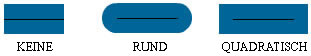
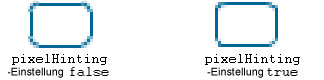

| Paket | flash.display |
| Klasse | public final class GraphicsStroke |
| Vererbung | GraphicsStroke |
| Implementiert | IGraphicsStroke, IGraphicsData |
| Sprachversion: | ActionScript 3.0 |
| Laufzeitversionen: | Flash Player 10, AIR 1.5 |
Verwenden Sie ein GraphicsStroke-Objekt mit der Graphics.drawGraphicsData()-Methode. Das Zeichnen eines GraphicsStroke-Objekts entspricht dem Aufrufen einer der Methoden der Graphics-Klasse, die den Linienstil festlegt, wie z. B. die Graphics.lineStyle()-Methode, die Graphics.lineBitmapStyle()Methode oder die Graphics.lineGradientStyle()-Methode.
Verwandte API-Elemente
flash.display.Graphics.lineBitmapStyle()
flash.display.Graphics.lineGradientStyle()
flash.display.Graphics.drawGraphicsData()
 Vererbte öffentliche Eigenschaften ausblenden
Vererbte öffentliche Eigenschaften ausblenden Vererbte öffentliche Eigenschaften anzeigen
Vererbte öffentliche Eigenschaften anzeigen| Eigenschaft | Definiert von | ||
|---|---|---|---|
| caps : String
Gibt den Typ der Linienenden an. | GraphicsStroke | ||
 | constructor : Object
Ein Verweis auf das Klassenobjekt oder die Konstruktorfunktion für eine angegebene Objektinstanz. | Object | |
| fill : IGraphicsFill
Gibt die Instanz an, die Daten zum Füllen eines Strichs enthält. | GraphicsStroke | ||
| joints : String
Gibt den Verbindungstyp für Winkel an. | GraphicsStroke | ||
| miterLimit : Number
Legt den Grenzwert fest, an dem ein Winkel abgeschnitten wird. | GraphicsStroke | ||
| pixelHinting : Boolean
Legt fest, ob Striche als ganze Pixel angezeigt werden. | GraphicsStroke | ||
| scaleMode : String
Legt die Skalierung der Strichbreite fest. | GraphicsStroke | ||
| thickness : Number
Gibt die Stärke der Linie in Punkt an. Gültig sind Werte von 0 bis 255. | GraphicsStroke | ||
| Methode | Definiert von | ||
|---|---|---|---|
GraphicsStroke(thickness:Number = NaN, pixelHinting:Boolean = false, scaleMode:String = "normal", caps:String = "none", joints:String = "round", miterLimit:Number = 3.0, fill:IGraphicsFill = null)
Erstellt ein neues GraphicsStroke-Objekt. | GraphicsStroke | ||
|
Gibt an, ob für ein Objekt eine bestimmte Eigenschaft definiert wurde. | Object | |
|
Gibt an, ob eine Instanz der Object-Klasse in der Prototypkette des Objekts vorhanden ist, das als Parameter angegeben wurde. | Object | |
|
Gibt an, ob die angegebene Eigenschaft vorhanden ist und durchlaufen werden kann. | Object | |
|
Legt die Verfügbarkeit einer dynamischen Eigenschaft für Schleifenoperationen fest. | Object | |
|
Gibt die Stringdarstellung dieses Objekts zurück, formatiert entsprechend den Konventionen des Gebietsschemas. | Object | |
|
Gibt das angegebene Objekt als String zurück. | Object | |
|
Gibt den Grundwert des angegebenen Objekts zurück. | Object | |
caps | Eigenschaft |
caps:String| Sprachversion: | ActionScript 3.0 |
| Laufzeitversionen: | Flash Player 10, AIR 1.5 |
Gibt den Typ der Linienenden an. Folgende Werte sind zulässig: CapsStyle.NONE, CapsStyle.ROUND und CapsStyle.SQUARE. Wird kein Wert angegeben, verwendet Flash runde Enden.
Die folgende Abbildung zeigt beispielsweise die verschiedenen Einstellungen für capsStyle. Die Abbildung zeigt für jede Einstellung eine blaue Linie mit der Stärke 30 (für die capsStyle gilt) sowie eine überlagerte schwarze Linie mit der Stärke 1 (für die kein capsStyle gilt):

Implementierung
public function get caps():String public function set caps(value:String):voidVerwandte API-Elemente
fill | Eigenschaft |
public var fill:IGraphicsFill| Sprachversion: | ActionScript 3.0 |
| Laufzeitversionen: | Flash Player 10, AIR 1.5 |
Gibt die Instanz an, die Daten zum Füllen eines Strichs enthält. Eine IGraphicsFill-Instanz kann eine Reihe von Füllbefehlen darstellen.
Verwandte API-Elemente
joints | Eigenschaft |
joints:String| Sprachversion: | ActionScript 3.0 |
| Laufzeitversionen: | Flash Player 10, AIR 1.5 |
Gibt den Verbindungstyp für Winkel an. Folgende Werte sind zulässig: JointStyle.BEVEL, JointStyle.MITER und JointStyle.ROUND. Wird kein Wert angegeben, verwendet Flash runde Verbindungen.
Die folgende Abbildung zeigt beispielsweise die verschiedenen Einstellungen für joints. Die Abbildung zeigt für jede Einstellung eine blaue Winkellinie mit der Stärke 30 (für die jointStyle gilt) sowie eine überlagerte schwarze Winkellinie mit der Stärke 1 (für die kein jointStyle gilt):
Hinweis: Ist joints auf JointStyle.MITER gesetzt, können Sie den Parameter miterLimit verwenden, um die Länge des Winkels einzuschränken.
Implementierung
public function get joints():String public function set joints(value:String):voidVerwandte API-Elemente
miterLimit | Eigenschaft |
public var miterLimit:Number| Sprachversion: | ActionScript 3.0 |
| Laufzeitversionen: | Flash Player 10, AIR 1.5 |
Legt den Grenzwert fest, an dem ein Winkel abgeschnitten wird. Gültige Werte liegen zwischen 1 und 255 (Werte außerhalb dieses Bereichs werden auf 1 bzw. 255 gerundet). Dieser Wert wird nur dann verwendet, wenn jointStyle auf "miter" gesetzt wird. Der Wert miterLimit steht für die Länge, die ein Winkel über jenen Punkt hinausgehen kann, an dem zwei Linien eine Verbindung bilden. Der Wert drückt einen Faktor der Linieneigenschaft thickness aus. Bei einem miterLimit-Faktor von 2,5 und einer thickness von 10 Pixeln, wird der Winkel bei 25 Pixeln abgeschnitten.
Betrachten Sie beispielsweise die folgenden Winkellinien mit einer thickness von 20 und mit einem miterLimit von 1, 2 und 4. Darüber befinden sich schwarze Referenzlinien, die die Schnittpunkte der Verbindungen anzeigen:

Beachten Sie, dass bei einem gegebenen miterLimit-Wert ein bestimmter Maximalwinkel existiert, bei dem der Winkel abgeschnitten wird. In der folgenden Tabelle finden Sie einige Beispiele:
miterLimit-Wert: | Winkel, die kleiner sind als dieser Wert, werden abgeschnitten: |
|---|---|
| 1.414 | 90 Grad |
| 2 | 60 Grad |
| 4 | 30 Grad |
| 8 | 15 Grad |
pixelHinting | Eigenschaft |
public var pixelHinting:Boolean| Sprachversion: | ActionScript 3.0 |
| Laufzeitversionen: | Flash Player 10, AIR 1.5 |
Legt fest, ob Striche als ganze Pixel angezeigt werden. Dies wirkt sich sowohl auf die Positionen der Anker einer Kurve als auch auf die Linienstärke des Strichs selbst aus. Wenn pixelHinting auf true gesetzt ist, stellt Flash Player die Linienstärken auf volle Pixel ein. Ist pixelHinting auf false gesetzt, können Kurven und gerade Linien unterbrochen sein. In den folgenden Abbildungen wird veranschaulicht, wie Flash Player zwei Rechtecke mit abgerundeten Ecken darstellt, die identisch sind, abgesehen davon, dass der pixelHinting-Parameter in der lineStyle()-Methode anders eingestellt ist (die Abbildungen sind um 200 % vergrößert, um den Unterschied deutlich zu zeigen):

scaleMode | Eigenschaft |
scaleMode:String| Sprachversion: | ActionScript 3.0 |
| Laufzeitversionen: | Flash Player 10, AIR 1.5 |
Legt die Skalierung der Strichbreite fest. Gültige Werte sind:
-
LineScaleMode.NORMAL: Die Linienstärke wird immer skaliert, wenn das Objekt skaliert wird (der Standard). -
LineScaleMode.NONE: Die Linienstärke wird nie skaliert. -
LineScaleMode.VERTICAL: Die Linienstärke wird nicht skaliert, wenn das Objekt nur vertikal skaliert wurde. Betrachten Sie beispielsweise die folgenden Kreise, die mit einer 1 Pixel starken Linie gezeichnet wurden und bei denen der ParameterscaleModejeweils aufLineScaleMode.VERTICALgesetzt wurde. Der Kreis links wurde nur vertikal skaliert, und der Kreis rechts wurde sowohl vertikal als auch horizontal skaliert.
-
LineScaleMode.HORIZONTAL: Die Linienstärke wird nicht skaliert, wenn das Objekt nur vertikal skaliert wurde. Betrachten Sie beispielsweise die folgenden Kreise, die mit einer 1 Pixel starken Linie gezeichnet wurden und bei denen der ParameterscaleModejeweils aufLineScaleMode.HORIZONTALgesetzt wurde. Der Kreis links wurde nur horizontal skaliert, und der Kreis rechts wurde sowohl horizontal als auch vertikal skaliert.
Implementierung
public function get scaleMode():String public function set scaleMode(value:String):voidVerwandte API-Elemente
thickness | Eigenschaft |
public var thickness:Number| Sprachversion: | ActionScript 3.0 |
| Laufzeitversionen: | Flash Player 10, AIR 1.5 |
Gibt die Stärke der Linie in Punkt an. Gültig sind Werte von 0 bis 255. Wenn keine Zahl angegeben ist oder wenn der Parameter den Wert „undefined“ aufweist, wird keine Linie gezeichnet. Wenn ein kleinerer Wert als 0 übergeben wird, ist der Standardwert 0. Der Wert 0 steht für die geringste Linienstärke. Der Höchstwert beträgt 255. Wenn ein größerer Wert als 255 übergeben wird, ist der Standardwert 255.
GraphicsStroke | () | Konstruktor |
public function GraphicsStroke(thickness:Number = NaN, pixelHinting:Boolean = false, scaleMode:String = "normal", caps:String = "none", joints:String = "round", miterLimit:Number = 3.0, fill:IGraphicsFill = null)| Sprachversion: | ActionScript 3.0 |
| Laufzeitversionen: | Flash Player 10, AIR 1.5 |
Erstellt ein neues GraphicsStroke-Objekt.
Parameterthickness:Number (default = NaN) | |||||||||||
pixelHinting:Boolean (default = false)pixelHinting auf true gesetzt ist, stellt Flash Player die Linienstärken auf volle Pixel ein. Ist pixelHinting auf false gesetzt, können Kurven und gerade Linien unterbrochen sein. In den folgenden Abbildungen wird veranschaulicht, wie Flash Player zwei Rechtecke mit abgerundeten Ecken darstellt, die identisch sind, abgesehen davon, dass der pixelHinting-Parameter in der lineStyle()-Methode anders eingestellt ist (die Abbildungen sind um 200 % vergrößert, um den Unterschied deutlich zu zeigen):
Wird kein Wert angegeben, wird die Funktion nicht verwendet. | |||||||||||
scaleMode:String (default = "normal")
| |||||||||||
caps:String (default = "none")CapsStyle.NONE, CapsStyle.ROUND und CapsStyle.SQUARE. Wird kein Wert angegeben, verwendet Flash runde Enden.
Die folgende Abbildung zeigt beispielsweise die verschiedenen Einstellungen für | |||||||||||
joints:String (default = "round")JointStyle.BEVEL, JointStyle.MITER und JointStyle.ROUND. Wird kein Wert angegeben, verwendet Flash runde Verbindungen.
Die folgende Abbildung zeigt beispielsweise die verschiedenen Einstellungen für Hinweis: Ist | |||||||||||
miterLimit:Number (default = 3.0)jointStyle auf "miter" gesetzt wird. Der Wert miterLimit steht für die Länge, die ein Winkel über jenen Punkt hinausgehen kann, an dem zwei Linien eine Verbindung bilden. Der Wert drückt einen Faktor der Linieneigenschaft thickness aus. Bei einem miterLimit-Faktor von 2,5 und einer thickness von 10 Pixeln, wird der Winkel bei 25 Pixeln abgeschnitten.
Betrachten Sie beispielsweise die folgenden Winkellinien mit einer
Beachten Sie, dass bei einem gegebenen
| |||||||||||
fill:IGraphicsFill (default = null) |
Verwandte API-Elemente
Tue Jun 12 2018, 10:04 AM Z